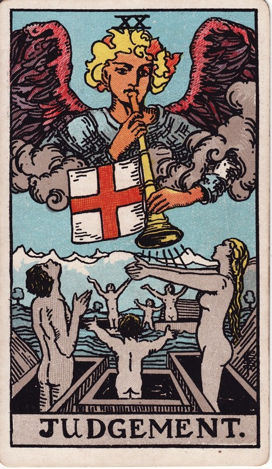

天使号角象征唤醒，复起的人们张开双臂回应；群山代表无法回避的长期课题与新的意识高度。
象征推演：对应火要素或冥王星。20由两个10组成：命运之轮的转变听天由命，审判同样行至红十字旗的十字路口，却可自己决定——号角声自内心召唤，过去作为在此总验收后一笔勾销。
审判像一次清醒的回顾：过去的选择被看见，而你有机会以更成熟的方式回应。它强调承担和更新，而不是羞耻定罪。
逆位审判显示你可能被自责困住，或明知该回应却一直推迟；也可能目光短浅做出不利决定，自食恶果，错失重要讯息。真正的复盘以改变为目的，不是无休止惩罚自己。
学习提示：审判不是别人给你判决，而是你听见更成熟的自己在召唤。
正位：Change of position, renewal, outcome. Another account specifies total loss though lawsuit.
逆位：Weakness, pusillanimity, simplicity; also deliberation, decision, sentence.
出处：A.E. Waite《The Pictorial Key to the Tarot》(1910)，公有领域。古典断语反映二十世纪初的读法，与上方现代心理向解读互为古今对照；重大议题请以自我觉察为先，牌不做医疗/法律/财务建议。
塔塔🔮の心灵疗愈室 · 牌义百科为站内容自留地：中文解读自有，古典断语公有领域署名引用。https://cindysd.github.io/tata-public/